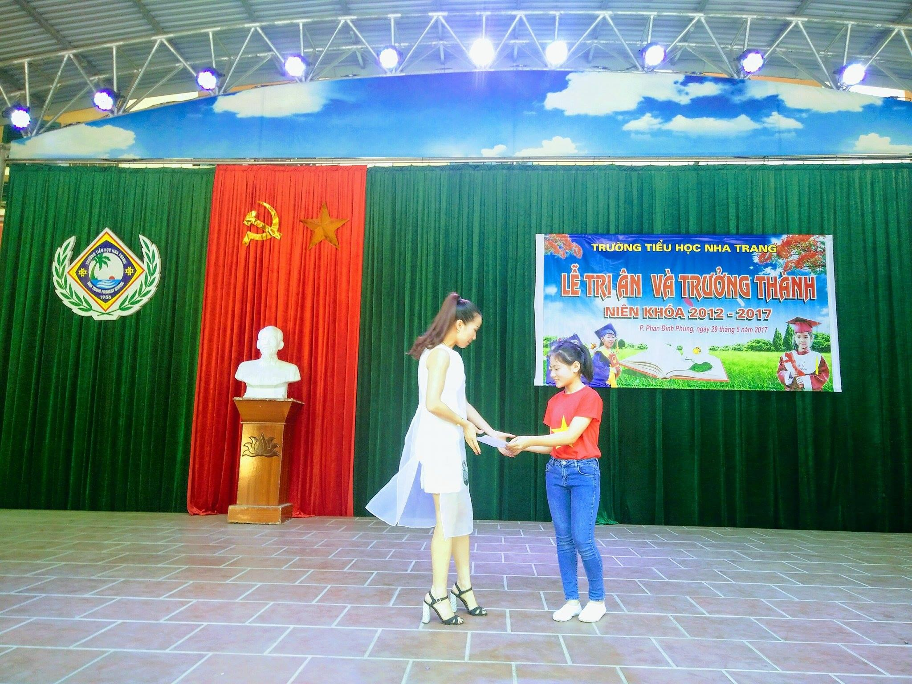

Lễ tri ân và trưởng thành niên khóa 2012 - 2017
Nhằm giúp cho tất cả học sinh khối 5 nhận thức rõ ràng về công lao sinh thành dưỡng dục của cha mẹ và công lao dạy dỗ của thầy cô; thể hiện sự quan tâm chăm sóc của phụ huynh học sinh với con em mình; tạo điều kiện cho các em học sinh bộc lộ những cảm xúc, bày tỏ lòng biết ơn chân thành của mình với cha mẹ, thầy cô, .... Từ đó các em sẽ cố gắng nhiều hơn nữa, quyết tâm hơn nữa trong việc học tập và rèn luyện đạo đức, luôn luôn tâm đắc là làm sao không để cho cha mẹ và thầy cô buồn lòng, sau này trở thành người thật sự có ích cho tổ quốc. Được sự chỉ đạo của Ban Giám hiệu, hôm nay trường tiểu học Nha Trang long trọng tổ chức Lễ tri ân và ra trường cho học sinh khối 5 niên khóa 2012 – 2017. Đến dự buổi lễ có đại biểu Ban đại diện Cha mẹ học sinh nhà trường, Ban giám hiệu và toàn thể cán bộ, viên chức cùng 227 em học sinh lớp 5 của nhà trường.
Năm học 2016-2017, toàn trường có 227 học sinh lớp 5 được công nhận hoàn thành Chương trình tiểu học, nhiều em tham dự các kỳ thi cấp thành phố, tỉnh, quốc gia do ngành GD&ĐT tổ chức đạt thành tích cao như: 2 em Trần Hoàng Đăng Quang và Vũ Lê Minh Huy lớp 5G đạt Huy chương Bạc Olympic tiếng Anh trên Internet cấp Quốc gia, 7 học sinh đạt giải Khuyến khích cuộc thi IOE và OSE cấp Quốc gia, ...
Trong nắng vàng rực rỡ của trời thu tháng 9 năm 2012, thầy cô đã đón các em vào ngày tựu trường. Những ánh mắt trong veo, bỡ ngỡ, rụt rè của ngày đầu đến lớp giờ đây đã không còn nữa. Trải qua 5 năm học với sự dìu dắt của thầy cô, với sự che chở của gia đình, 5 năm được sống trong tình bạn gắn bó, các em học sinh khối 5 đã lớn dần lên, trưởng thành hơn, và không ngừng phấn đấu để đóng góp cho nhà trường những thành tích đáng tự hào. Ngày hôm nay các em đã bước những bước chân đầu tiên vững chắc trên chặng đường thành công của cuộc sống. Với nhiều cảm xúc dâng trào em Đoàn Mai Chi Lớp 5A đã thay mặt các bạn học sinh khối 5 đã chia sẻ cảm xúc và giao nhiệm vụ cho học sinh khối 4.
Em Phạm Châu Anh - học sinh lớp 4H đại diện học sinh lớp 4 nhận nhiệm vụ từ các anh chị khối 5
Qua năm năm học tập, dưới sự dìu dắt của các thầy cô, sự nuôi dưỡng, chăm sóc của Ông, Bà, Cha, Mẹ, các em đã lớn khôn, qua giáo dục các em đã biết yêu thương, chia sẻ với những bạn kém may mắn hơn mình, và các em đã biết tự chăm sóc bản thân mình, biết kính trọng và lễ phép với Ông, Bà, Cha, Mẹ và những người lớn hơn mình. Nhân buổi Lễ tri ân và ra trường, các em đã tỏ lòng tri ân công ơn dưỡng dục, sinh thành của Ông, Bà, Cha, Mẹ, tri ân tình cảm và tấm lòng của Thầy Cô.
Em Lê Hoài Thương - Lớp 5G Đọc thư tri ân cha, mẹ

Bà Hương - Phụ huynh nhận thư tri ân của các con

Em Trần Vũ Ngọc Vân - lớp 5E đọc thư tri ân thầy cô
Cô Vũ Thị Hường nhận thư tri ân và dặn dò học sinh khi ra trường
Ban giám hiệu trao Chứng nhận hoàn thành chương trình Tiểu học cho các em học sinh niên khóa 2012-2017